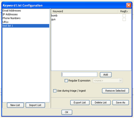
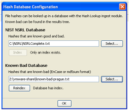

Autopsy runs a Microsoft Windows computer. The Autopsy installer will copy all needed files to the computer.
Before you ingest your first disk image, there are some settings that you may want to configure. To make these configuration changes, start Autopsy and then close the Welcome screen that prompts you to create or open case by using the red "X" in the upper right.
Autopsy will automatically search for keywords in pre-configured lists. You can create or import keyword lists in the Keyword List Manager. You can open the Keyword List Manager from the "Tools" menu.

To import a keyword list that was created from another instance of Autopsy, use the "Import List" button and browse to the file.
To create a keyword list, use the "New List" button. Choose a name for the list and then add keywords to it. It will be automatically saved. Select "Use during triage / ingest" if you want this list to be used automatically when an image is added.
Autopsy will automatically search for files with hash values that match those that are in databases. You can import hash databases into Autopsy using the Hash Database Manager. You can open it from the "Tools" menu.

You can use the NIST NSRL to ignore known files. If you were provided with a large file named NSRLComplete.txt-md5.idx, then browse to that file in the NIST NSRL section in the top part of the window.
You can import EnCase hashsets to flag known bad files. Browse to the EnCase hashset file in the Known Bad Hashset section of the window. You may need to make an index of this file before you can use it by pressing the "Index" button. In the future, you can copy the .idx index file along with the EnCase hashset to other Autopsy installations and avoid having to re-index the database.
Disk images are added to a case. A case could have a single image or it could have all of the images from an objective. Currently, a single report is generated for an entire case, so if you need to report on individual images, then you should use one image per case.
To create a case, use either the "Create New Case" option on the Welcome screen or from the "File" menu. This will start the New Case wizard. You will need to supply it with the name of the case and a directory to store the case results into. You can optionally provide case numbers and other details.
The next step is to add a disk image to the case. The "Add Image Wizard" will start automatically after the case is created or you can manually start it from the "File" menu or toolbar. You will need to supply it with the location of the disk image to add. Autopsy currently supports E01 and raw (dd) files.
It may take a few minutes to add the disk image. During this time, a database is being created of the file system contents.
You will next be prompted to configure the Ingest Modules. Ingest modules will run in the background and perform specific tasks.
You can also choose the update frequency. This setting configures how often you will get updates from the ingest modules when they are running in the background. The more frequent the updates, the longer the overall process will take.
While modules are running in the background, you will see a progress bar in the lower right.
SCREEN SHOT HERE
You will start all of your analysis techniques from the tree on the left.
When you select a node from the tree on the left, a list of files will be shown in the upper right. You can use the Thumbnail view in the upper right to view the pictures. When you select a file from the upper right, its contents will be shown in the lower right. You can use the tabs in the lower right to view the text of the file, an image, or the hex data.
If you are viewing files from the Views and Results nodes, you can right click on a file to go to its file system location. This feature is useful to see what else the user stored in the same folder as the file that you are currently looking at. You can also right click on a file to extract it to the local system.
If you want to search for single keywords, then you can use the search box in the upper right of the program. The results will be shown in a table in the upper right.
As you are going through the results in the tree, the ingest modules are running in the background. The results are shown in the tree based on the update frequency selected when the image was added to the case.
The Ingest Inbox receives messages from the ingest modules as they find results. You can open the inbox to see what has been recently found. It keeps track of what messages you have read.
The intended use of this inbox is that you can focus on some data for a while and then check back on the inbox at a time that is convenient for them. You can then see what else was found while you were focused on the previous task. You may learn that a notable file was found or that a file was found with a relevant keyword and then decide to focus on that for a while.
When you select a message, you can then jump to the Results tree where more details can be found or jump to the file's location in the file system.
In this section, we will provide examples of how to do common analysis tasks.
If you want to view the user's recent web activity, make sure that the Recent Activity ingest module was enabled. You can then go to the "Results " node in the tree on the left and then into the "Extracted Data" node. There, you can find bookmarks, cookies, downloads, and history.
If you want to see if the image had known bad files, make sure that the Hash Lookup ingest module was enabled. You can then view the "Hashset Hits" section in the "Results" area of the tree on the left. Note that hash lookup can take a long time, so this section will be updated as long as the ingest process is occurring. Use the Ingest Inbox to keep track of what notable files were recently found.
When you find a notable file in this interface, you may want to right click on the file to also view the file's original location. You may find additional files that are relevant and stored in the same folder as this file.
If you want to see all images and video on the disk image, then go to the "Views" section in the tree on the left and then "File Types". Select either "Images" or "Videos". You can use the thumbnail option in the upper right to view thumbnails of all images.
NOTE: We are working on making this more efficient when there are lots of images and we are working on the feature to display video thumbnails.
You can select an image or video from the upper right and view the video or image in the lower right. Video will be played with sound.
A final report can be generated that will include all analysis results. Use the "Generate Report" button to create this. It will create an HTML or XLS report in the Reports folder of the case folder. If you forgot the location of your case folder, you can determine it using the "Case Properties" option in the "File" menu.